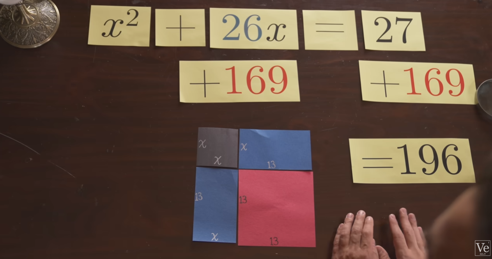

Renaissance Quadratics
The next time you have thoughts that tell you "algebra sucks," consider Renaissance math.
The people of that era, especially in Europe, didn't have aldebra to solve problems such as quadratics.
In fact, their geometrical systems didn't even allow them to use negative numbers, meaning they had six different quadratic equations arranged so that each term would be positive.

Let's take the equation x^2 + 26x = 27
Mathematicians would think of the x^2 term as a suqare with a side length of x and the 26x term as a rectangle with side lengths of 26 by x; the area of those shapes will add to 27.
In order to visualize what goes on in this process, we must first split the rectangle in half and arrange it so that we make a square with sidelengths of x + 13.
You may notice a piece of our square is missing, however, we already know the dimensions of that smaller square, 13x13.
By completing our bigger square via adding a smaller square, we are adding 169, the smaller square's area, to our equation.
(Keep in mind that 169 must be added to both sides in order to maintain the equasion's equality)
Now that we have the square's total area, 196 (which is 27 + 169), we can find out that the side lengths are 14.
If the side length is 14 and we know it's also x + 13, we can set 14 = x + 13, meaning x = 1